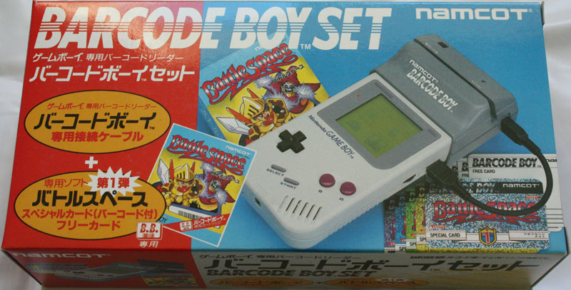
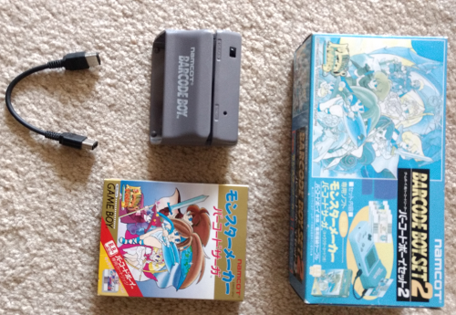
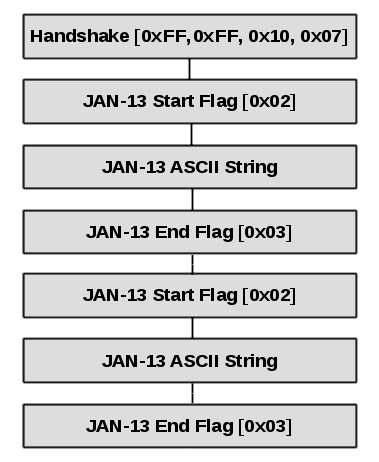

Source: genkivideogames.com
House of cards
Back in May, I tackled something that hadn't been emulated before, the card scanner for Barcode Taisen Bardigun. In that article, I mentioned an earlier card-scanning device called the Barcode Boy. Released in 1992, the Barcode Boy was the earliest card-scanning device for the Game Boy, and one of the first for handheld consoles (only predated by the popular Barcode Battler). As the name implies, the device reads barcodes from cards swiped across its sensor. This exotic piece of hardware came from Namcot (Namco's old name) along with about four games that were specifically made to use it. If you've never heard of it, remember that the Barcode Boy was exclusive to Japan and never saw a release anywhere else. It's a really cool product, however, until recently it was poorly documented and preserved, and emulation of the Barcode Boy was pretty spotty at best.
One of the things that keeps me up at night is the thought of losing a part of gaming history, especially if I can do something about it. I mean, just imagine if information you cared about were simply erased due to neglect, or because it was not recorded soon enough. I take game preservation seriously, and I think that some day in the future, stuff like the Barcode Boy should be more than just a footnote on Wikipedia that kids can read about; it should be something everyone can experience. The Barcode Boy itself is pretty old, with its 25th anniversary coming up at the end of the year; time is of the essence in this case. It's certainly not getting any younger, and the amount of available working units isn't getting any larger. Under these kinds of circumstances, I found myself more than eager to emulate the Barcode Boy once and for all.
Like the rest of articles in the Edge of Emulation series, I'm venturing into territory where few have ever been, if anyone has been there at all. Before I began this quest, only two Game Boy emulators appeared to offer support for the Barcode Boy: KiGB and GEST. Both, however, don't really emulate the Barcode Boy fully. In either case, the emulator simply generates random data until the game accepts the barcode as valid. Although you can save good barcodes, KiGB admits the process of getting correct data is "trial and error." That's not really how you're supposed to emulate something. I mean, it works (sometimes) if you just want to play a game, but that really isn't proper emulation. Emulation, after all, is more than just running old games on modern devices.
KiGB is closed-source, so it doesn't really offer any insight into how people at least thought the Barcode Boy should work. GEST, on the other hand, is open-source software and gives slightly more details in the code. I started emulating the Barcode Boy from scratch (100% clean room) and didn't actually examine GEST's code until later, but I can tell you it's mostly guess work in that emulator. Outside of those two emulators, only a few people from MAME over the years have taken a passing interest in the Barcode Boy, however, no one's implemented anything just yet. To add to all of this, little data about the Barcode Boy exists online, just a few short wiki entries, and a handful of blogs in Spanish (not a problem for me, since I can read those just fine without a translator). So the Barcode Boy is a big fat mystery, albeit one slightly more documented than Barcode Taisen Bardigun. Once again, it's time to push the limits of emulation.
The long waiting game
The first step in this process, naturally, is to acquire the original hardware. A few people brought this up in my article about Barcode Taisen Bardigun: wouldn't it be easier to reverse-engineer the Barcode Boy by looking inside one of the supported games? While it would be possible to learn how the Barcode Boy works by disassembling a game like Battle Space, that's the path of greatest resistance. Disassembling a game is tedious work, even if you're focused on one little area. Even though Game Boy assembly code is relatively easy to read and understand, video games have many "moving parts" that work together, and each needs to be understood to make sense of the complete package. Trying to understand how the Barcode Boy works through game code alone is challenging because it takes a lot of effort to figure out what in the world the game code wants to do in the first place. Put another way, imagine trying to understand how a car engine works, but you can only see the whole thing as a giant collection of interacting molecules rather than pistons and gears. You don't have the luxury of knowing what the higher-level view looks like; you have to label everything yourself.
Furthermore, the original hardware is necessary for verification purposes. As a matter of accurately preserving something, you should be able to poke and prod the real thing. Sometimes you can tease out behavior that games aren't programmed to use. It also makes testing simpler, faster, and more efficient. And, unless the hardware is broken or faulty, you can largely trust the results if everything is tested correctly. As a final note, having the original hardware just looks good on a shelf. Who doesn't want something rare as part of their collection?

I didn't intend to start collecting rare and obscure Game Boy stuff, but that's what's happening now, apparently
Fortunately for me, eBay had a Barcode Boy on sale, specifically a Barcode Boy Set 2, which came with a game called Monster Maker: Barcode Saga. The original cards were lost, but it came with some handmade replacements (pieces of cardboard with printed barcodes stuck to them). The seller mentioned that they wouldn't work with the scanner (they actually did, to my later surprise), so I ordered Battle Space and its cards just to be certain I'd have enough material to work with. The Barcode Boy came all the way from Japan in like a week, much faster than I anticipated. Battle Space and the cards, however, took almost 10 days to get to me, despite shipping in the same country I live in (USA) and having an estimated delivery of 3-4 days. I work in shipping for a living, so I know how stuff can get delayed sometimes, but really USPS? The cards got stuck in one of their processing facilities 7 days straight... Needless to say, I was miffed that I had the hardware but had to sit on my hands for so long.
My troubles didn't end there though. As soon as I got the Battle Space cards, I gave the Barcode Boy a test drive. The Barcode Boy is a large scanner that is supposed to fit itself on top of the Game Boy. It was designed for the original Game Boy, the "gray brick" DMG-01, so any later Game Boy models are too small. You don't need to snap the Barcode Boy on top of the Game Boy for it to work, however. The Barcode Boy and Game Boy communicate via the serial port, so you only need to connect the two. The serial port on the Barcode Boy is a first generation one, meaning it ordinarily only works with something like a DMG-01. However, I had a Universal Link Cable (MGB-010) which allows second generation ports on GB Pockets and GBCs to connect with older ones. I plugged everything up, powered on the Barcode Boy, and fired up my GBC only to find out nothing would work. I kept getting the message "バーコード ボーイの でんげんを いれなおしてください" which basically asks me to turn on the Barcode Boy, even though it already was. It looked like the GBC couldn't ping the Barcode Boy. I tried it with every Game Boy I had (2 GBCs, 1 GB Pocket, and 3 GBAs). To my dismay, none of these efforts proved effective.
On a hunch, I wondered if the Barcode Boy could only work with the original Game Boys, so I ordered one and waited yet another week (no delay from USPS this time though). Amazingly, the Barcode Boy starting working when connected to a DMG-01, like magic. I suspect that the serial ports on the original Game Boys somehow use more power than the ones in later models. Perhaps the Barcode Boy was never intended to be used with anything but the first Game Boy units Nintendo produced. That makes sense given the Barcode Boy came out in 1992; the Game Boy Pocket (the first Game Boy with a second generation serial port) wasn't due until 1996. At any rate, this is a very curious case of hardware that will only work on the DMG-01. But still, I had to wait the better part of a month before I could begin any work!
Getting inside the Barcode Boy
With everything finally sorted, it was time to dive into the Barcode Boy. The goal was to find out what data the Barcode Boy sends to the Game Boy when a card is scanned. Once again, as with my work on Barcode Taisen Bardigun, I decided the best way to capture that data was via a hacked ROM on a flashcart. The hack was specifically designed to read any incoming data over the serial port and save it to the cartridge's RAM. For my first test, I chose to use Battle Space. The code I injected was literally copy+paste from the Barcode Taisen Bardigun hack, the only real change being I forced the game to use saved RAM (the original Battle Space does not have game saves). Basically, the hack hijacks the routine that runs every time the Game Boy receives data from the Link Cable and copies it to save RAM. With this, I can see everything the Barcode Boy sends to the Game Boy. There's no guessing involved since the raw data comes from actual hardware running like it should.
The hacked ROM worked more or less fine. For whatever reason, my flashcart didn't seem to like Battle Space too much; it kept displaying graphical glitches, even when using a completely unmodified ROM. Thankfully that didn't affect the results in saved RAM, as far as I could tell. I swiped two cards and recorded the information from those scans, then promptly examined everything in a hex editor. After an hour or so analyzing and documenting my findings, I came up with a pretty clear picture of how the Barcode Boy works.
Similar to the GB Mobile Adapter and the GB Printer, there is a sort of "magic number" or handshake that the Barcode Boy exchanges with the Game Boy. Specifically, the Game Boy will send the bytes 0x10 0x07 0x10 0x07 one at a time. The Barcode Boy is expected to reply with the bytes 0xFF 0xFF 0x10 0x07. To be more precise, Barcode Boy games don't actually care about the first two bytes of the handshake (they can be anything, apparently), but the last two bytes must be 0x10 and 0x07. If the Barcode Boy is disconnected (returning 0xFF) or there is some other issue (such as using anything but a DMG-01), the handshake will fail, and the game will complain about being unable to detect the Barcode Boy and ask the player to turn it on.
After the handshake passes, the Game Boy does something I haven't seen with any other device: it waits. That is to say, the Game Boy waits to receive input from the Link Cable instead of actively requesting it. On a technical level for serial input-output, the Game Boy switches from an internal clock to an external clock. Basically this means the Game Boy is the "slave" device, and the Barcode Boy is "master"; the Barcode Boy does all the talking while the Game Boy listens. I have never encountered this kind of behavior anywhere else with Game Boy accessories or add-ons.
The Barcode Boy sends no data until it detects a card swipe. Upon reading a card, it immediately transmits the data in a rather simple format. Barcode data is transferred as an ASCII string of numbers representing the barcode's JAN-13 number. JAN-13 is essentially EAN-13, a common type of barcode found on many retail items. The main difference is that JAN-13 uses a specific flag code. As one might expect, there are 13 digits that make up the number. The Barcode Boy sends the JAN-13 number twice in a row. Every time it begins transmission of the string, it first sends a 0x02 byte. At the end of the string, it sends a 0x03 byte. And that's all there really is to it. Altogether, a total of 30 bytes are sent to the Game Boy for every card scan. If you were expecting a more complicated setup, it's not here. The communication protocol with the Barcode Boy is delightfully simple, as illustrated below:

Everything really is that cut and dry. The whole process repeats every time a card is to be scanned: handshake, then two ASCII strings. What's curious about the process, however, is that the JAN-13 number is sent twice. I believe this is a redundancy check of some sort. As I took more data from different card swipes, I'd notice that some of the JAN-13 numbers sent back to Game Boy were malformed. My thinking is that the Barcode Boy might be doing two readings in parallel each time a card is swiped (maybe interleaved?), and it sends both back; afterwards the Game Boy can pick whichever one looks good, or complain if both look corrupted. Ideally, each JAN-13 number should be the same, but that's not always the case, practically speaking.
Emulating all of this is really a straightforward affair. Once a card is a "swiped", the emulator simply sends 30 bytes via serial input-output back to the virtual Game Boy. In reality, only 15 unique bytes are necessary, since the second half can be a mirror of the first, as long as the JAN-13 number is valid. It's quite easy to load up the JAN-13 number from a file (text or binary) or load it as part of some .ini configuration option. In GBE+, to maintain a consistent interface for all card-scanning emulation, Barcode Boy cards are loaded up as binary files, however, they're super tiny at only 13 bytes.
Interestingly enough, most of the Barcode Boy games use some kind of psuedo-random number generator with the barcodes acting as a seed, so players can make up their own JAN-13 numbers for unique results. It's even possible to use barcodes from one game in another. For example, I had no trouble creating fighters in Monster Maker using the cards and barcodes from Battle Space. I believe the Barcode Boy games are supposed to let you make your own characters anyway so you can create your own barcodes for later use. In retrospect, this was a very novel way of expanding gameplay; it's a shame it never had the chance to catch on outside of Japan.
At any rate, the hardest thing to emulate about the Barcode Boy is the fact that it operates as "master". The Barcode Boy initiates transfers for the barcode data rather than the Game Boy, so that required a different approach from GBE+. I had to make sure the emulated Game Boy received data from the Barcode Boy in a timely fashion, and that the Barcode Boy was the one leading the way. It was essentially working in the exact opposite way of something like the GB Printer, and most of the serial input-output code in GBE+ is not set up to handle that kind of situation. Regardless, after a frustating night trying to get around things, I finally managed to make it work. Here's a brief video of Battle Space in action:
I got pretty far just by mashing the A button. The knight seems a bit overpowered.
As for the cards and barcodes themselves, it's quite easy to extract the JAN-13 number from just the barcode. As previously mentioned, JAN-13 is really a barcode format called EAN-13 with a specific flag code. JAN-13's flag code can either be 45 or 49 depending on when the barcode was made. After 1992, most switched to the newer flag code 45, but the Barcode Boy came around the time that transition officially took place, so it happens to use the older flag code 49. Aside from doing away with the center guard, the barcodes on all Barcode Boy cards follow the EAN-13 encoding. Knowing that, anyone can read the barcode; even just having an image of the barcode is enough. The process can be automated with a program to convert pixels in a picture to a JAN-13 number. With this, it's really simple to preserve the cards and the data they hold. Currently, I only have about half of all the barcodes officially released, but hopefully I can get in contact with people who have the rest. If you or someone you know has Barcode Boy cards please contact me. We need to get these things scanned and put in a database.
Another one bites the dust
Well, that's 2 items off my list of "white whales of emulation". Getting the Barcode Boy up and running in GBE+ turned out to be much easier than I imagined it. In some ways, it was a bit nicer than Barcode Taisen Bardigun since the data sent over the Link Cable was so small and easy to analyze right away. Most of my work was done in a single night, which is kind of ironic given how long it took to actually get everything from my mail carrier. Still I had fun with this, and I'm looking forward to checking out Monster Maker and Battle Space. Who knows, maybe I'll make a guide for GameFAQs later on. At the very least, we could do with some more screenshots of actual gameplay. In the meantime, all of the scans can be found on the Download page as well as a few samples of the barcodes as binary files GBE+ can load and use.
While all of the older Game Boy card-scanning stuff has now been documented, there is still more work to be done in regards to Game Boy emulation. Currently, I have yet another odd piece of Japan-only GBC hardware coming, something that has never been emulated in any capacity. With any luck, it should be possible to figure out how it operates and how it can be recreated using GBE+. I won't spoil anything, but I will say this has to be one of the craziest devices I've seen used with the GBC. It'll probably be another month until I manage to get my hands on it, however. So until then kids, always remember: "Nothing is impossible. Never surrender. Emulate everything."